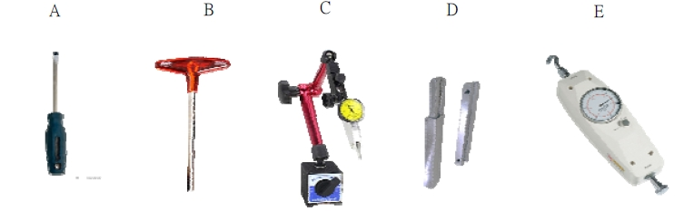
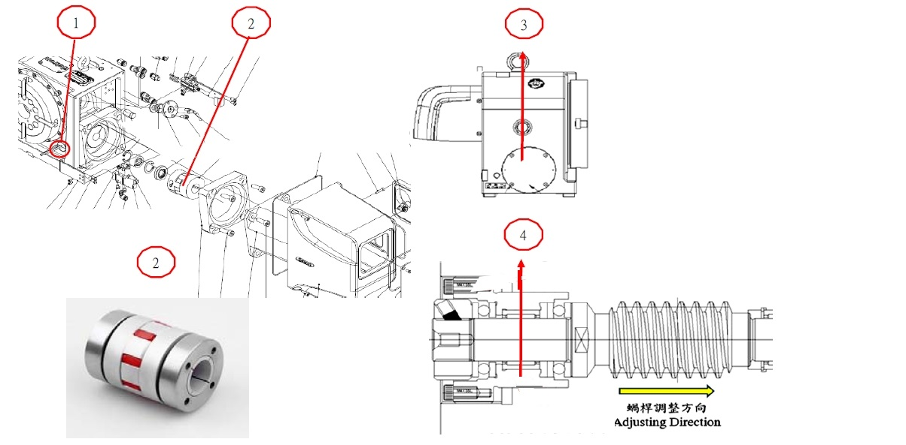
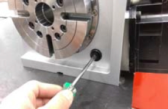
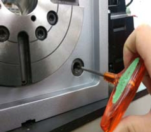
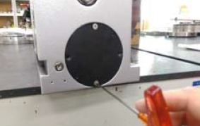
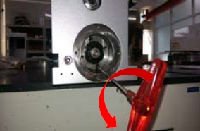

預覽新增
Trouble Shooting
File No : TS31103
Error Code : 0000

- A. Flat Screwdriver (平口螺絲起子)
- B. T-Wrench (T型板手)
- C. Dial indicator (千分錶)
- D. Jig-T-slot wrench (T溝板手-治具)
- E. Tensiometer (推拉力計)

- Parts (零件)：
- 1. Plug (塞蓋)
- 2. Coupling (聯軸器)
- 3. Cover (封軸蓋)
- 4. Sleeve of Worm Shaft (調整測套管)
Trouble Shooting
File No : TS31103
Error Code : 0000
Step 1

Illustration(步驟說明)：
Remove part 1. by tool A
使用平口螺絲起子移除塞蓋
Remark(備註補充)：
(Tool A)

Step 2

Illustration(步驟說明)：
Rotate motor until tool B(4mm) can reach M5 screws on
part 2. loose the screws. At remark 2. SKT.HD.CAP.SCR.
轉動馬達至可將T型板手4mm套入聯軸器上的M5螺絲2.後，將螺絲放鬆。
轉動馬達至可將T型板手4mm套入聯軸器上的M5螺絲2.後，將螺絲放鬆。
Remark(備註補充)：
(Tool B)

Step 3

Illustration(步驟說明)：
Remove Flat.HD.SKT.SKR *4pcs by tool B(2.5mm). Remove
part 3.
使用T型板手2.5mm拆開皿型螺絲 4只，將軸封蓋取 下。
使用T型板手2.5mm拆開皿型螺絲 4只，將軸封蓋取 下。
Remark(備註補充)：
(Tool B)

Step 4

Illustration(步驟說明)：
Loose SKT.HD.CAP.SCR *2pcs by tool B(3mm).
使用T型板手3mm放鬆內六角螺絲M4螺絲 2只。
使用T型板手3mm放鬆內六角螺絲M4螺絲 2只。
Remark(備註補充)：
(Tool B)